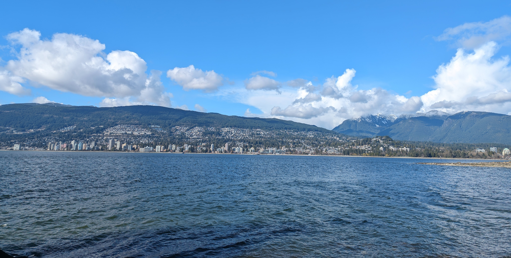

Wanxin Huang
|


About Me

I graduated with a Bachelor in Earth Sciences in the summer of 2025, specialising in Geosciences with particular interests in sedimentology, geomorphology, and tectonics. Fieldwork has taken me to British Columbia, California, and New South Wales — and I'm excited to see where the trails lead me next.
When I'm not staring at rocks, I'm probably exploring the outdoors, disovering hidden corners of a city, wandering through museums, disappearing into a good book — or just lazing around on a cozy afternoon.
Familiar With:
Google Earth EngineGeospatial AnalysisGround Penetrating Radar


Projects


Flooding and Precipitation in Phnom Penh
2022-2024
Examining increasingly prevalent floods in Phnom Penh through analysis of remote sensing and instrumental data
Memorabilia



Contact


Thank you for visiting!